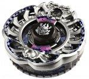

Archer Gargole SA165WSF
| Archer Gargole SA165WSF | |
|  | |
| Number: | BBG-17 |
|---|---|
| System: | Beyblade Zero-G |
| Type: | Attack |
| Element: | |
Contents
Stone Face: Gargole
- Weight: grams
This Stone Face's sticker represents a gargoyle which, in French culture, is a batlike creature of legends.
Chrome Wheel: Gargole
| Weight: | 29.5 grams | Full Width: | 47.74 mm | Height: | 6.72 mm |
Gargole is a Chrome Wheel with a design that spreads from the middle almost like a net: spikes indeed leave from the center while shapes like claws, at the bottom, and a monstrous head where the orb from the Crystal Wheel is inserted, at the top, form an overall part with four sections. The details in this Chrome Wheel however mean that it is filled with holes, making the monster head and claws situated at opposite ends of the Chrome Wheel be the denser parts. The bigger, spiky sections meant to remind more of wings, though, cover a larger portion of Gargole and their sides are mostly even, without interruptions like those caused by the horns on the monster's head.
Crystal Wheel: Archer
- Weight: 5.16 grams
Archer has large curves from a bow protruding around one half of its circumference, with some fancy string details engraved in the rest of the design, notably where the crystal is located.
Track: Switch Attack 165
- Weight: 6.18 grams
Reminiscent of Armor 145, SA165 also has a wide, parabolic shape around its core which is completely hollow except for the rigid sides forming the parabola. This latter piece can be removed, flipped, and inserted back on the core of the Track to build another mode which is more likely to touch the stadium floor, especially in Zero-G Stadiums. The parabolic part is not perfectly smooth however, as it has linear ridges going towards the core, and its outermost circumference is full of small spikes, much like GCF. Its diameter is considerable though.
- Normal Mode
When the parabola is ascending, with its diameter increasing toward the top, SA165 is in Normal Mode. Its wide perimeter is closest to the Metal Wheel or Chrome Wheel and offers a reinforcement to it.
- Zero-G Attack Mode
If the parabolic piece is flipped so that it forms a skirt that hangs over the Bottom rather than embraces the Chrome Wheel or Metal Wheel above, this Track is in Zero-G Attack Mode since it reproduces the wide diameter of efficient Zero-G Attack Bottoms such as GCF and CF.
Bottom: Wide Semi Flat
- Weight: grams
WSF is simply a Semi Flat Bottom with a slightly wider flat section, and with a wider base. In other terms, it forms a bigger cut cone than SF was. Two sets of spiky shapes are also on either side of the main tip part, possibly to create a relation with Archer Gargole, the Beyblade this Bottom was introduced with.
Other Versions
- Guardian Gargole M145SB - BBG-17 Random Booster 3 Vol. 2 Archer Gargole SA165WSF (Yellow and green stickers)
- Gargole Ifraid SA165GCF - BBG-24 Ultimate Synchrom DX Set Attack & Balance Type (Yellow, orange and white stickers)